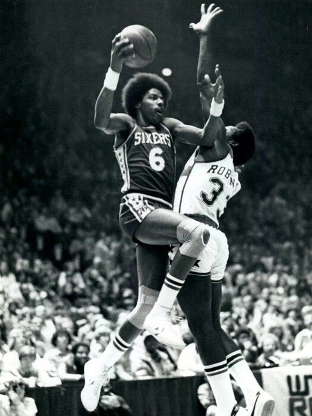
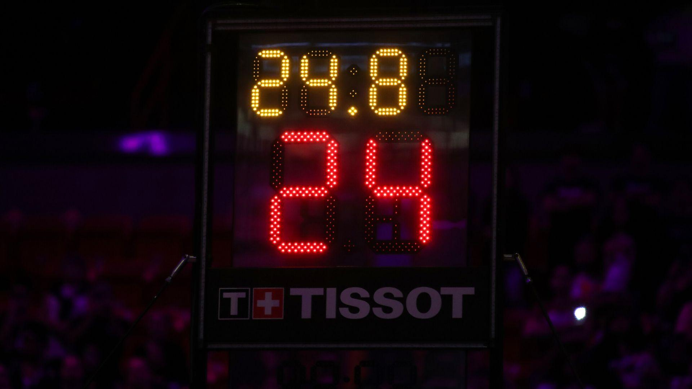
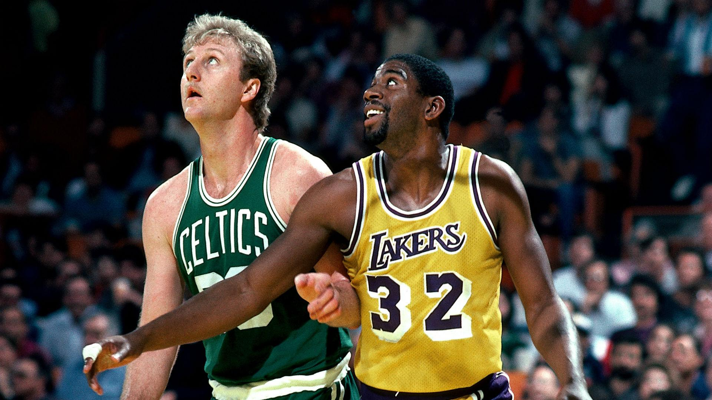
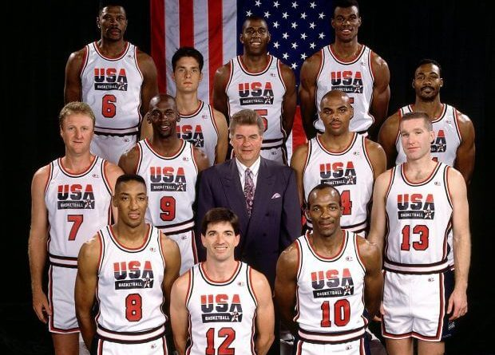

La Evolución de la NBA
Desde sótanos de hockey hasta el espectáculo más grande del mundo. Repasamos los hitos que forjaron la liga.
Desde sótanos de hockey hasta el espectáculo más grande del mundo. Repasamos los hitos que forjaron la liga.
La NBA nació originalmente como la BAA (Basketball Association of America). Fue fundada por dueños de estadios de hockey que querían llenar sus arenas en las noches libres. En 1949, se fusionó con la NBL, dando lugar oficialmente a la National Basketball Association.


La liga estuvo a punto de desaparecer por el aburrimiento: los equipos se pasaban el balón sin tirar para agotar el tiempo. Danny Biasone inventó el reloj de 24 segundos, obligando a los equipos a atacar. El ritmo de anotación subió instantáneamente y el público regresó a las gradas.
La llegada de Magic Johnson (Lakers) y Larry Bird (Celtics) salvó a la NBA de una crisis financiera y de drogas. Su rivalidad no solo fue deportiva, sino cultural, llevando a la liga a la televisión nacional y aumentando los salarios y la fama de los jugadores.


Por primera vez, los profesionales de la NBA compitieron en unos Juegos Olímpicos. El Dream Team de Barcelona 92, con Jordan, Magic y Bird juntos, fue un fenómeno que globalizó el baloncesto. Gracias a este equipo, hoy tenemos estrellas como Doncic o Antetokounmpo en la liga.
La analítica de datos demostró que el triple es la herramienta más eficiente. Con Stephen Curry como abanderado, el juego se ha alejado de la canasta. Los pivots ahora tiran de tres y el juego es más rápido que nunca.